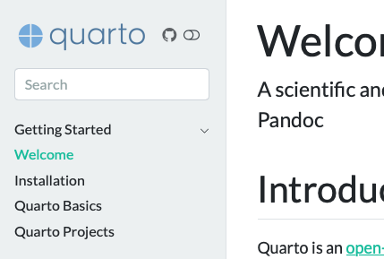
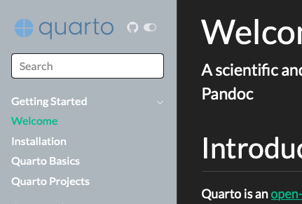

Website Tools
Google Analytics
You can add Google Analytics to your website by adding adding a google-analytics key to your _quarto.yml file. In its simplest form, you can just pass your Google Analytics tracking Id (e.g. UA-xxxxxxx) or Google Tag measurement Id (e.g. G-xxxxxxx) like:
website:
google-analytics: "UA-XXXXXXXX"Quarto will use the key itself to determine whether to embed Google Analytics (analytics.js) or Google Tags (gtag) as appropriate.
In addition to this basic configuration, you can exercise more fine grained control of your site analytics using the following keys.
| Key | Description |
|---|---|
tracking-id |
The Google tracking Id or measurement Id of this website. |
storage |
cookies - Use cookies to store unique user and session identification (default). none - Do not use cookies to store unique user and session identification. For more about choosing storage options see Storage. |
anonymize-ip |
Anonymize the user ip address. For more about this feature, see IP Anonymization (or IP masking) in Google Analytics. |
version |
The version number of Google Analytics to use. Currently supports either 3 (for analytics.js) or 4 (for gtag). This is automatically detected based upon the tracking-id, but you may specify it. |
Storage
Google Analytics uses cookies to distinguish unique users and sessions. If you choose to use cookies to store this user data, you should consider whether you need to enable Cookie Consent in order to permit the viewer to control any tracking that you enable.
If you choose none for storage, this will have the following effects:
For Google Analytics v3 (analytics.js)
No tracking cookies will be used. Individual page hits will be properly tracked, enabling you to see which pages are viewed and how often they are viewed. Unique user and session tracking will not report data correctly since the tracking cookies they rely upon are not set.For Google Tags (gtag)
User consent for ad and analytics tracking cookies will be withheld. In this mode, Google Analytics will still collect user data without the user identification, but that data is currently not displayed in the Google Analytics reports.
Site Resources
Besides input and configuration files, your site likely also includes a variety of resources (e.g. images) that you will want to publish along with your site. Quarto will automatically detect any files that you reference within your site and copy them to the output directory (e.g. _site).
If this auto-detection fails for any reason, or if you want to publish a file not explicitly linked to from within your site, you can add a resources entry to your configuration. For example, here we specify that we want to include all Excel spreadsheets within the project directory as part of the website:
project:
type: website
resources:
- "*.xlsx"Note that the *.xslx value is quoted: this is because YAML requires that strings that begin with non-alphanumeric characters be quoted.
You can also add a resources metadata value to individual files. For example:
title: "My Page"
resources:
- "sheet.xlsx"Images are the most commonly used type of resource file. If you have global images (e.g. a logo) that you want to reference from various pages within your site, you can use a site-absolute path to refer to the images, and it will be automatically converted to a relative path during publishing. For example:
Dark Mode
Quarto websites can support both a light and dark mode. For example, you may use the flatly and darkly themes (which are designed to be used in tandem as dark and light appearances) as:
theme:
light: flatly
dark: darklyFor more about selecting the dark and light themes for your website, see Dark Mode.
| Light | Dark |
|---|---|
|  |  |
When enabled, a toggle that allows your reader to control the appearance of the website will appear. The toggle will automatically be added to the website navigation as follows:
- If a navbar has been specified, the toggle will appear in the top right corner of the nav bar.
- If there is no navbar present, but a sidebar has been specified, the toggle will appear in the same location that the sidebar tools appears (adjacent to the title or logo in the sidebar).
- If there is no navbar or sidebar present, the toggle will appear in the top right corner of the page.
Social Metadata
You can enhance your website and the content that you publish to it by including additional types of metadata, including:
One important thing to note about using website tools is that while these tools are added to websites within the
websitekey, in a book you should include the same options in thebookkey. For example, in a website you would include a favicon and twitter card as follows:In a book you’d use the
bookkey instead:As you read the documentation below, keep in mind to substitute
bookforwebsiteif you are authoring a book.Favicon
The favicon for your site provides an icon for browser tabs and other sites that link to yours. Use the
faviconoption to provide the path to a favicon image. For example:Twitter Cards
Twitter Cards provide an enhanced appearance when someone links to your site on Twitter. When a link to your site is included in a Tweet, Twitter automatically crawls your site and fetches any Twitter Card metadata. To enable the automatic generation of Twitter Card metadata for your site, you can add the following to your
_quarto.ymlconfiguration file:In this case, Quarto will automatically generate a title, description, and preview image for the content. For more information about how Quarto finds preview images, see Preview Images.
You may also provide additional metadata to be used when generating the Twitter Card, including:
titletitlemetadata from the page metadata. If you’d like you can override this just for the Twitter Card by including atitlein thetwitter-cardmetadata.descriptiondescriptionmetadata from the page metadata. If you’d like you can override this just for the Twitter Card by including adescriptionin thetwitter-cardmetadata.imageThe path to a preview image for this content. By default, Quarto will use the
imagevalue from the document metadata, or if that isn’t specified, theimagevalue from thewebsite:metadata. If you provide an image, you may also optionally provide animage-widthandimage-heightto improve the appearance of your Twitter Card.If
imageis not provided, Quarto will automatically attempt to locate a preview image. For more information, see Preview Images.card-stylesummaryorsummary_large_image. If this is not provided, the best style will automatically selected based upon other metadata. You can learn more about Twitter Card styles here.creator@usernameof the content creator. Note that strings with special characters such as@must be quoted in yaml.site@usernameof website. Note that strings with special characters such as@must be quoted in yaml.Here is a more comprehensive example of specifying Twitter Card metadata in a
quarto.ymlfile:Quarto will automatically merge global metadata found in the
website: twitter-cardkey with any metadata provided in the document itself in thetwitter-cardkey. This is useful when you need to specify a mix of global options (for example,site) with per document options such astitleorimage.Open Graph
The Open Graph protocol is a specification that enables richer sharing of links to articles on the web. It will improve the previews of your content when a link to it is pasted into applications like Slack, Discord, Facebook, Linkedin, and more. To enable the automatic generation of Open Graph metadata for your content, include the following in your
_quarto.ymlconfiguration file:In this case, Quarto will automatically generate a title, description, and preview image for the content. For more information about how Quarto finds preview images, see Preview Images.
You may also provide additional metadata to be used when generating the Open Graph metadata, including:
titletitlemetadata from the page metadata. If you’d like you can override this just for the Open Graph metadata by including atitlein theopen-graphmetadata.descriptiondescriptionmetadata from the page metadata. If you’d like you can override this just for the Open Graph metadata by including adescriptionin theopen-graphmetadata.imageThe path to a preview image for this content. By default, Quarto will use the
imagevalue from the document metadata, or if that isn’t specified, theimagevalue from thewebsite:metadata. If you provide an image, you may also optionally provide animage-widthandimage-heightto improve the appearance of your Twitter Card.If
imageis not provided, Quarto will automatically attempt to locate a preview image. For more information, see Preview Images.localesite-nameopen-graphmetadata, Quarto will use thewebsite:titlevalue.Here is a more comprehensive example of specifying Open Graph metadata in a
quarto.ymlfile:Quarto will automatically merge global metadata found in the
website: open-graphkey with any metadata provided in the document itself in theopen-graphkey. This is useful when you need to specify a mix of global options (for example,site) with per document options such astitleorimage.Preview Images
You can specify a preview image for your article in several different ways:
Full URL: You can explicitly provide a full url to the preview image using the
imagefield in the appropriate metadata. For example:Relative Path: You may provide a document relative path to an image (such as
images/preview-code.png) or a project relative path to an image (such as/images/preview-code.png). If you provide a relative path such as this, you must also provide asite-urlin your site’s metadata. For example in your_quarto.ymlconfiguration file:and in your document front matter:
Image Class: Any image that is being rendered in the page may also be used as a preview image by giving it the class name
preview-image. Quarto will select the first image it finds with this class. For example, the following image will be used as the preview image when included on a page:If you label an image with this class, you must also provide a
site-urlin your site’s metadata.Image Filename: If none of the above ways of specifying a preview image have been used, Quarto will attempt to find a preview image by looking for an image included in the rendered document with one of the following names:
preview.png,feature.png,cover.png, orthumbnail.png.If you’d like to provide a default that is used when pages specify a preview image in none of the above ways, specify it at the site level:
If you would like to prevent preview image discovery on a page, set
imagetofalse: